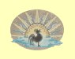
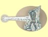
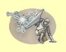
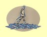
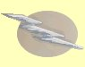
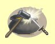
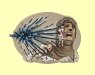
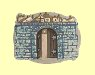
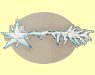
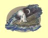

Magie vody
Procitnutí
Mana: 1, Cena: 100
Automaticky probudí v¹echny tvé postavy z normálního i magického spánku, pokud ov¹em netrval pøíli¹ dlouho. Vìt¹í dovednost v Magii Vody znamená mo¾nost del¹ího spánku, ne¾ se kouzlo stane nefunkèním.
|  | Normální | Funguje pokud postava spí ménì ne¾ 3 minuty za bod dovednosti |
| Expert | Funguje pokud postava spí ménì ne¾ 1 hodinu za bod dovednosti | |
| Mistr | Funguje pokud postava spí ménì ne¾ 1 den za bod dovednosti |
Mrazivý proud
Mana: 2, Cena: 200
Jeden cíl je na okam¾ik obklopen polem extrémního chladu. Kouzlo zpùsobuje jen 2-6 bodù zranìní, ale v¾dy zasáhne. Èím vy¹¹í je dovednost v Magii Vody, tím rychlej¹í je zotavení. Mistøi vodní magie kouzlí Mrazivý proud bez many.
|  | Normální | Kouzlo stojí 2 body many |
| Expert | Kouzlo stojí 1 bod many. Rychlej¹í zotavení | |
| Mistr | Kouzlo stojí 0 many. Nejrychlej¹í zotavení |
Ochrana proti chladu
Mana: 3, Cena: 300
Zvy¹uje odolnost v¹ech èlenù proti chladu podle bodù dovednosti v Magii Vody. Kouzlo trvá hodinu za ka¾dý bod dovednosti magie vody.
|  | Normální | 1 bod odolnosti za bod dovednosti |
| Expert | 2 bod odolnosti za bod dovednosti | |
| Mistr | 3 bod odolnosti za bod dovednosti |
Jedovatý sprej
Mana: 4, Cena: 400
Vystøíkne jed na nestvùry pøed tvými postavami. Zranìní je sice nízké, ale jen málo nestvùr je odoných proti jedu, tak¾e kouzlo vìt¹inou funguje. Ka¾dá støela zpùsobí 2 body zranìní + 1-2 body za bod dovednosti.
| Normální | Pomalé zotavení 1 støela | |
| Expert | Rychlej¹í zotavení, 3 støely | |
| Mistr | Nejychlej¹í zotavení, 5 støel |
Chùze po vodì
Mana: 5, Cena: 500
Chùze po vodì umo¾òuje tvým postavám chodit po vodní hladinì bez zranìní. Toto kouzlo funguje jen venku a ubírá jeden bod many za ka¾dých 20 minut kontaktu tvé skupiny s vodou.
|  | Normální | Doba trvání 5 minut za bod dovednosti |
| Expert | Doba trvání 10 minut za bod dovednosti | |
| Mistr | Doba trvání 1 hodina za bod dovednosti |
Ledový hrot
Mana: 8, Cena: 750
Vystøelí jeden ledový hrot proti jedinému cíli. V¾dy zasáhne a zpùsobí 1-7 bodù zranìní za bod dovednosti v Magii Vody.
|  | Normální | Støední zotavení |
| Expert | Rychlej¹í zotavení | |
| Mistr | Nejrychlej¹í zotavení |
Oèaruj pøedmìt
Mana: 10, Cena: 1000
Kouzlo mù¾e dodat vybrané vìci nìjaké magické vlastnosti. ©ance na úspìch je 10% za ka¾dý bod dovednosti v Magii Vody. Experti vykouzlí lep¹í magické vlastnosti a jen mistøi mohou oèarovat zbranì.
|  | Normální | Pouze slabá oèarování |
| Expert | Silnìj¹í oèarování | |
| Mistr | Lze oèarovat i zbranì |
Kyselinový vír
Mana: 15, Cena: 1500
Kyselinový vír zasáhne vybranou obì» proudem stra¹livé ¾íravé kyseliny. V¾dy zasáhne a zpùsobuje 9 zranìní plus 1-9 bodù za bod dovednosti. Velkou výhodou je, ¾e jen málo potvor je odolných proti kyselinì.
|  | Normální | Støední zotavení |
| Expert | Rychlej¹í zotavení | |
| Mistr | Nejrychlej¹í zotavení |
Mìstská brána
Mana: 20, Cena: 2000
Mìstská brána teleportuje skupinu do posledního mìsta, kde se napila z centrální fontány. Mìstská brána má ¹anci na úsìch 10% za ka¾dý bod Magie Vody.
|  | Normální | Funguje pouze venku |
| Expert | Funguje i uvnitø | |
| Mistr | Funguje kdekoliv a lze si vybrat cílové mìsto |
Ledový úder
Mana: 25, Cena: 3000
Vystøelí ledovou kouli ve smìru pohledu kouzelníka. Kdy¾ na nìco narazí, koule se rozletí na 7 úlomkù do v¹ech smìrù, kromì smìru zpátky na kouzelníka. Úlomky poletují dokud nìco nezasáhnou nebo se nerozpustí. Ka¾dý úlomek zpùsobí 12 bodù zranìní plus 1-2 body za bod dovednosti v Magii Vody.
|  | Normální | Pomalé zotavení |
| Expert | Rychlej¹í zotavení | |
| Mistr | Nejrychlej¹í zotavení |
Lloydùv maják
Mana: 30, Cena: 5000
Lloydùv maják ti umo¾ní nastavit si znamení na nìjaké místo a v budoucnosti se na toto znamení zpìt teleportovat. Jak dlouho tato znaèka vydr¾í závisí na dovednosti v Magii Vody.
|  | Normální | 1 znaèka zmizí za 1 hodinu za bod dovednosti |
| Expert | 3 znaèka zmizí za 1 den za bod dovednosti | |
| Mistr | 5 znaèka zmizí za 1 týden za bod dovednosti |